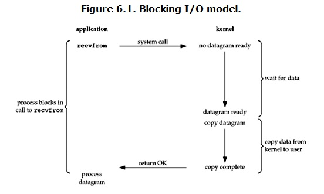
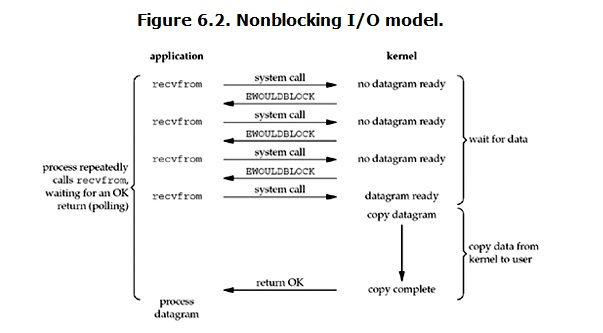
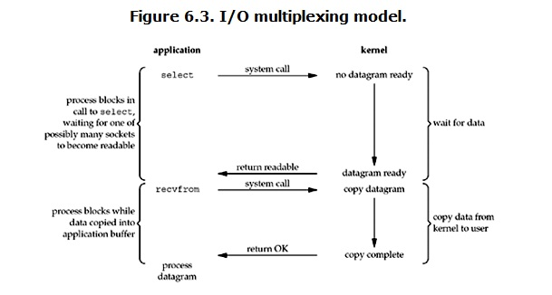

网络IO模型
本节阐述的IO模型不是单线程下的所有IO. 针对的是linux单线程下的network IO!!! 网络IO远比本地IO慢的多!
本章节IO模型的代码可以不写,因为在开发中不会去写这些东西,但我们要知道它的底层是如何实现的!!!
IO模型介绍¶
IO Model一共可以分为5种:
1> blocking IO 阻塞IO
2> nonblocking IO 非阻塞IO
3> IO multiplexing IO多路复用
4> signal driven IO 信号驱动IO (不常用,本节不会进行相关阐述)
5> asynchronous IO 异步IO
网络编程(TCP、UDP)中涉及到的IO操作:
| I/O | 服务端 | 客户端 |
|---|---|---|
| 收/输入/input 上:TCP 下:UDP |
accept、recv recvfrom |
recv recvfrom |
| 发/输出/output 上:TCP 下:UDP |
send sendto |
connect、send sendto |
其它输入操作: read、readv、recvmsg; 其它输出操作: write、writev、sendmsg
当I/O发生时,会分为两个阶段:
1> wait data -- 等待数据准备 (Waiting for the data to be ready)
2> copy data -- 将数据从内核拷贝到进程中 (Copying the data from the kernel to the process)
其中,收消息的IO操作会经历上面两个阶段,发消息只会经历第二个copy data的阶段!
wait data结束,意味着OS缓存中拥有了该数据!
以服务端的recv操作和send操作为例:
△ recv:
wait data: C端应用程序产生msg数据 -- 将C端应用程序内存中的mag数据拷贝给C端OS -- C端OS将数据沿着网络传输给S端的OS -- S端OS收到后回复一个确认信息 -- C端OS将缓存中的msg数据清除
copy data: 将S端OS缓存中的msg数据拷贝一份到S端应用程序内存中 -- 拷贝后,S端OS缓存中的msg数据自动销毁
△ send:
copy data: 将S端应用程序内存中的数据拷贝到S端OS缓存中
Q: 为什么用户能明显体会到收消息的等待,而发消息则不会？
A: wait data阶段会经历网络延迟,耗时长 ; copy data阶段是本地拷贝,速度很快,耗时短.
网络IO模型将围绕着这两个阶段展开阐述!
阻塞IO¶
blocking IO -- 不能实现并发

图6.1 阻塞I/O模型. 进程在调用recvfrom时阻塞.图中是以UDP的recvfrom操作为例的.
1> 应用程序调用收消息的recvfrom接口,该接口会发送一个系统调用给操作系统..问操作系统有没有数据给我.
2> 操作系统没有数据给应用程序,应用程序开始阻塞,进入wait data阶段,OS调用网卡接收消息
3> 直到wait data结束,数据来到了OS缓存中
4> 接着进入copy data阶段.将数据从OS缓存拷贝到应用程序内存中
5> 拷贝完成后,recvfrom操作结束
[网络编程学习历程]
1> 两个循环
我们刚接触网络编程时,写的程序就是阻塞IO的.遇到IO就在原地等,不能实现并发,效率非常低.
具体回顾下:写了两个循环,外层链接循环,里层通信循环;accept阻塞结束后才能执行下一行代码.recv同理.
弊端 -- 建完链接后不能干通信,通信完后才能重新建立下一个链接.
所以的活都由一个线程干!遇阻塞全歇菜.
如在调用recv(1024)时,线程将被阻塞,在此期间,线程将无法执行任何运算或响应任何的网络请求.
2> 并发解决方案:多进程、多线程
此处是IO密集型的,使用多线程.让主线程不断的建立链接,每建立一个链接就启用一个子线程负责该链接的通信.
注意 -- 此解决方案并没有将IO问题解决!
分析 -- 该思路的I/O问题遇到阻塞还是会经历wait data和copy data的阶段.该阻的一个都不会落下.
但某个子线程阻塞了并不影响其它子线程的执行.
即多线程/多进程的目的是让每个连接都拥有独立的线程/进程,使得任何一个连接的阻塞都不会影响其他的连接.
弊端 -- 若并发的客户端个数过多,会导致服务端启动的线程数过多.机器受不了.
具体来说,开启多进程/多线程,在遇到成百上千的连接请求时.无论多线程还是多进程都会严重占据系统资源
降低系统对外界响应效率,而且线程与进程本身也更容易进入假死状态(OS忙于切换啦,不会真正的干活)
3> 池:对链接数加以限制,控制在机器可承受的范围内.
说到池,我们往往会想到"线程池"或"连接池".
“线程池”旨在减少创建和销毁线程的频率,其维持一定合理数量的线程,并让空闲的线程重新承担新的执行任务.
“连接池”维持连接的缓存池,尽量重用已有的连接、减少创建和关闭连接的频率.
这两种技术都可以很好的降低系统开销,都被广泛应用很多大型系统,如websphere、tomcat和各种数据库等.
Ps:回顾一下这句话,半连接池backlog限制的是<同一时刻>的请求数!
线程池vs连接池详解参考链接:`https://www.jianshu.com/p/a25bc5ff7942`
注意 -- 运用池,这不是提升效率的方案,只是让机器面对高并发时不宕机的则中方案.
问题 -- “线程池”和“连接池”技术也只是在一定程度上缓解了频繁调用IO接口带来的资源占用.
假设机器只能扛住100的并发,若来10个任务,没必要用池.
若来200个任务,用线程池限制连接数,这效率必然会比直接开200个线程低.
但因为切换的速度够快.用户不会有明显的等待.
但是当请求大大超过上限时,比如1千万,“池”构成的系统对外界的响应并不比没有池的时候效果好多少.
所以使用“池”必须考虑其面临的响应规模,并根据响应规模调整“池”的大小.
到这里,不管是多进程/多线程还是池,都对单个线程下的IO行为置之不理.那如何是好?
4> 协程
将单个线程下的IO降到最低,监测单线程下的IO,遇到IO就切,效率也就提升上去了.单个线程能抗的并发数就多起来了.
多线程+协程 -- 1000个线程,每个线程能扛住1000个任务,一百万的并发就搞定了.
不借助已有的gevent模块,使用某种IO模型自己实现协程(单线程下实现并发)!!
非阻塞IO¶
non-blocking IO
在非阻塞式IO中, 应用程序需要不断的主动询问操作系统内核(kernel)数据准备好了没有.
原理¶

图6.2 非阻塞I/O模型. 进程重复调用recvfrom, 等待OK返回. (轮询)
1> 同样的, 应用程序会调用收消息的recvfrom接口,该接口会发送一个系统调用给操作系统..
2> 若kernel/操作系统中的数据还没有准备好,那么它并不会block/阻塞用户进程, 而是立刻返回一个error
3> 用户进程判断结果是一个error时, 它就知道数据还没有准备好, 于是用户进程就可以在本次到下次再发起read询问的时间间隔内做其他事情, 或者直接再次发送read操作(recvfrom)
4> 一旦kernel中的数据准备好了,并且又再次收到了用户进程的system call, 那么它马上就将数据拷贝到了应用程序内存 (这一copy data阶段是阻塞的,是不可避免的,在这期间是不能干其它事情的).
也就是说 非阻塞的recvform系统调用调用之后,进程并没有被阻塞, 内核马上返回给进程. 若数据还没准备好,此时会返回一个error. 进程在得到返回之后,可以干点别的事情,然后再发起recvform系统调用. 重复上面的过程,循环往复的进行recvform系统调用. 这个过程通常被称之为轮询. 轮询检查内核数据,直到数据准备好,再拷贝数据到进程,进行数据处理. 需要注意,拷贝数据的整个过程,进程仍然是属于阻塞的状态.
该方案将花时间最长的wait data阶段利用了起来,利用此阶段的时间干单线程下其它计算的活.
单线程的效率得到了提升.
代码实现¶
recvfrom原本是阻塞操作,要等两个阶段完完整整做完后再执行下一行代码,我们要将其变为非阻塞的.
关键代码 --server.setblocking(False)非阻塞IO的精髓在于完全没有阻塞!
服务端¶
运用非阻塞IO模型,服务端在单线程下就实现了并发.
from socket import *
server = socket(AF_INET, SOCK_STREAM)
server.bind(("127.0.0.1", 8080))
server.listen(5)
# -- 设置阻塞与否,默认flag参数值为True,代表默认的IO模型是阻塞的
# -- 此处我们设置flag的参数指为False 将I/O模型变为非阻塞的
# 非阻塞IO模型里,若程序的IO操作的wait data阶段没有做完,会抛BlockingIOError异常
# 该服务端中涉及到的IO操作有 accept、recv、send
server.setblocking(False)
conn_l = []
while True:
# -- 实现了遇到IO就做其它事情
# try里的代码报错就执行except里的代码,except里的代码执行完后,因为while True循环.
# 循环往复这一过程. 当然except子代码块里的也有可能遇到IO,同样的捕获异常.
try:
print("总连接数[%s]" % len(conn_l)) # -- 每启动一个客户端,连接数就会加1
conn, addr = server.accept()
conn_l.append(conn) # -- 若不执行此操作,每次与客户端新建立的链接就会被覆盖掉
except BlockingIOError:
# print("做了2s其它的事情!")
# time.sleep(2) # -- 此处不是模拟io,而是模拟做其它计算用了2s的时间
# -- 进一步明确,其它事情指的是做通信循环的活
# (若要考虑粘包问题) 一点提示: conn作为key,value对应上此conn收的数据,收的数据做一个拼接
# 比如:conn_msg_l = [] conn_msg_l[conn] = data
# conn_msg_l列表中的每一个元素是字典 {链接:该链接收到的消息"拼接"}
del_conn_l = []
for conn in conn_l:
try:
# -- 要知道,conn_l里的一堆链接是归操作系统管
# 哪怕这一堆链接的客户端同时发数据过来,收到的数据都会先往服务端的OS缓存里存.
# 该程序询问当前循环到的链接在OS缓存中有无对应的数据
# OS和应用程序是互相不干扰的两个进程,各自可以干各自的事情
data = conn.recv(1024)
if len(data) == 0: # -- 解决Linux下客户端断开链接,服务端一直接收空字符串的问题
conn.close()
# -- 为啥不直接conn_l.remove(conn)呢? 因为不要在for循环里改变循环对象的结构!
del_conn_l.append(conn)
continue
conn.send(data.upper())
except BlockingIOError:
continue # -- 第一个连接进行recv操作时没数据,不代表第2个没有 这里写成pass也行
except ConnectionResetError: # -- 解决windows下客户端断开链接的问题
conn.close()
del_conn_l.append(conn)
for conn in del_conn_l:
conn_l.remove(conn)
客户端¶
import os
from socket import *
client = socket(AF_INET, SOCK_STREAM)
client.connect(("127.0.0.1", 8080))
while True:
msg = "%s hello" % os.getpid()
client.send(msg.encode('utf-8'))
data = client.recv(1024)
print(data.decode('utf-8'))
"""
当然,可以以多线程的形式模拟多个客户端
"""
弊端¶
非阻塞IO模型是不被推荐的!
1> 非阻塞IO,一点IO都没有.. 虽然在单线程下实现了并发,内存占用少了,但 对cpu的无效占用过高!!
循环调用recv()将大幅度推高CPU占用率.. 而且大多数的轮询是没有意义的.白占cpu还不干活.
2> 若conn_l列表中的连接数很多,for循环一次也会很慢.
3> 按照服务端代码的运行逻辑, accept询问OS有无连接,若没有,就去干通信循环的活了.. 在干通讯循环的活的过程中,新的连接来啦,没有得到及时的处理!! 导致整体数据吞吐量的降低! 不能及时反馈客户端的信息!
扩展阅读链接: `https://blog.csdn.net/pythontide/article/details/109242386
注意send()触发BlockingIOError异常的条件,并不是说写个send代码就会触发异常..
后文的多路复用IO中也有对send操作阻塞的解释!!
多路复用IO!!¶
IO multiplexing; 有些地方也称这种IO方式为事件驱动IO(event driven IO)
原理¶

图6.3 I/O多路复用模型
进程在select调用中阻塞,等待可能的多个套接字中的一个变得可读; 将数据复制到应用程序的缓冲区.
1> wait data阶段. 在阻塞与非阻塞IO模型中, 是应用程序的套接字对象直接调用 recv、recvfrom、accept 发起系统调用请求的, 在IO多路复用模型中, 是通过select模块发起的. 该系统调用会问操作系统有无数据;
2> select模块帮我们管理着一堆套接字,select发起系统调用问OS,这堆socket中有无准备好数据的, 会阻塞住!(可以设置timeout) 当有数据到达了OS缓存时, 解除阻塞, 将准备好数据的socket通知给 用户/应用程序 进程..
3> 接着进入 copy data阶段, 应用程序将那些有数据到达的socket对象通过recvfrom 并发 的发起系统调用, 因为select已经帮忙问了, 所以 不会阻塞, 该系统调用会直接将数据从OS内核复制到应用程序内存.速度会很快.
再提醒一点,应用程序发起的recv等收消息的操作:
1> 阻塞模型的IO操作会经历两个阶段,两个阶段都会block.
2> 非阻塞模型当socket对象的IO操作(accept、recv)在OS缓存中没有相应的数据时,暂且只经历wait data阶段
但不会阻塞.会在这期间做其它的活!
(通过非阻塞IO的代码实现,可以看到accept、recv做的其它活,实际上指的都是通信循环).
当有相应的数据后,该IO操作会再经历copy data阶段.
copy data阶段是block的,不可避免的.但copy data阶段速度很快!
So,非阻塞模型的IO操作也会经历两个阶段.第一个阶段不阻塞,第二个阶段阻塞.
3> IO多路复用的select模块只会经历wait data阶段!!询问操作系统有无数据.并不会真正的收数据!
效率比较: 非阻塞 > 阻塞
阻塞与多路复用的效率比较呢？
1> 假设select只管一个socket,与阻塞模型相比,阻塞模型的效率高!
他们都会经历两个阶段(两个阶段都要等),但多路复用比阻塞多了两个过程.
一个是有数据到达后,return readable返回结果,以及 recvfrom在数据到达后会进行一次 system call.
2> 假设select管理多个socket,与阻塞模型相比,IO多路复用模型的效率高!
因为阻塞IO同一时间只能问一个,这一个阻塞住了,后面的都运行不了啦.
而多路复用IO可以一次性的问多个,是并发的,没有消息过来,会阻住,但一个套接字阻住啦,不会影响其它的套接字.
非阻塞与多路复用的效率比较呢？非阻塞的效率高.
可以仔细品一品,非阻塞IO与select的工作流程很像!但非阻塞IO是应用程序在问,多路复用是select在问.
IO多路复用询问完后,要返回那些有数据的套接字,基于这些准备好的套接字再发起请求.
但为何不用非阻塞IO模型呢？因为非阻塞的cpu占用率很高.它会不间断的询问!
而多路复用IO中select.select()处会阻塞住!!等待数据(链接、消息)发过来.
我们也可以给多路复用中的select设置超时时间. 在超时时间里来数据了或者超时时间到了,都会接触阻塞!
那非阻塞IO模型在询问时加个time.sleep(3)不就行了嘛?no,这样写死了啊,否管有没有数据来,都会睡够3秒.
可能刚睡下去0.01s,就来数据了..
代码实现¶
初探select.select()¶
select模块询问操作系统我维护的列表里哪些套接字有消息/数据过来啦!
有四个参数:
1> rlist -- 与收消息有关的套接字对象 server专门建立链接、一堆conn专门收消息
socket()实例化的server可通过accept方法建立链接conn; conn可以调用recv方法收到消息.
Ps: 可以打印server和链接conn,可以看到它们都是
2> wlist -- 与写数据相关的套接字 conn
conn.send() 若数据量小IO时间忽略不计;若数据量大也会感觉到等待
3> xlist -- 跟异常有关,用不到 但这里还是得传值
4> timeout -- 超时时间,是可选的参数,默认值为None
指定一个时间(s),若在该时间内得到了OS返回结果或者时间到了没结果,都会继续运行下面的代码!!
解决了非阻塞IO模型中不停的询问,中间没有任何的阻塞导致cpu有大量时间是无效占用的问题!
没有必要指定timeout参数,select.select()是等OS有返回结果;不是不间断的询问..
select.select()会阻塞但该阻塞是合理的, 因为没数据就该原地等着,但有数据就不会阻塞了!!
返回值: 返回三个列表, 里面只存放 有数据的/准备好的 套接字对象
"""
★ -- 客户端代码
"""
import os
from socket import *
client = socket(AF_INET, SOCK_STREAM)
client.connect(("127.0.0.1", 8080))
while True:
msg = "%s hello" % os.getpid()
client.send(msg.encode('utf-8'))
data = client.recv(1024)
print(data.decode('utf-8'))
"""
★ -- 服务端代码
"""
import select
from socket import *
server = socket(AF_INET, SOCK_STREAM)
server.bind(("127.0.0.1", 8080))
server.listen(5)
server.setblocking(False)
read_list = [server, ]
write_list = []
while True:
# -- rl列表里的就是server这个套接字对象,因为只有它有对应的数据
rl, wl, xl = select.select(read_list, write_list, [])
# print(rl[0] is server) # -- True
# print(rl, wl, xl) # -- [<socket.socket fd=3, family=AddressFamily.AF_INET,
# type=SocketKind.SOCK_STREAM, proto=0,
# laddr=('127.0.0.1', 8080)>] [] []
print("++++++")
1> 一开始启动服务端时,是阻塞在select.select()处的.. 因为select监听到OS缓存中没有数据
2> 接着启动客户端,发送了一个链接请求到服务端所在机器的OS缓存中. select模块监听到read_list读列表中的server套接字有消息过来(在OS缓存中有对应的链接数据),不再阻塞,继续执行下一行代码.
print("++++++")3> 因为while True的存在.循环往复过程中, 因为OS缓存中的请求链接没有被取走(应调用accept方法取走server套接字对应的链接数据), OS缓存中一直有数据, 所以select.select()不会阻塞.
如果select.select()不设置超时时间,什么时候阻塞在原地? select模块维护着一堆套接字,去问OS时,问这些套接字有无对应的数据准备好,若没有就会一直在原地等着!select会一直问.直到有数据准备好,不再阻塞.
注意!!!!!! 应用程序select.select()发起一个系统调用后, 是操作系统在 遍历 read_list看里面的套接字对象在OS缓存里有无对应数据,会将准备好数据的套接字对象返回!! 相当于select.select()是一个读操作,OS系统去问这些套接字是否准备好数据..有准备好的才会有返回结果...
Q: select.select()里设置超时时间为3秒,与非阻塞IO模型里设置一个time.sleep(3)是一回事吗?
A: no! 假设0.1s就来数据了,前者只会等0.1; 后者会等满3s!!
Ps 那执行完select.select(),在执行其它代码时来数据了咋整? 没有办法,机制就是这样的!!只不过其它代码都是大量的计算,速度很快!!
实现不停的建链接¶
能够实现不停的建立链接,建立链接的阻塞操作不会影响通信(即已建好的链接收消息的操作不会阻塞住)!!
"""
★ -- 客户端代码
"""
from socket import *
client = socket(AF_INET, SOCK_STREAM)
client.connect(("127.0.0.1", 8080))
while True:
msg = input(">>:").strip() # -- 这里改动了下,便于实验
client.send(msg.encode('utf-8'))
data = client.recv(1024)
print(data.decode('utf-8'))
"""
★ -- 服务端代码
"""
import select
from socket import *
server = socket(AF_INET, SOCK_STREAM)
server.bind(("127.0.0.1", 8080))
server.listen(5)
server.setblocking(False)
read_list = [server, ]
write_list = []
while True:
rl, wl, xl = select.select(read_list, write_list, [])
print("read_list:%s rl:%s wl:%s" % (len(read_list), len(rl), len(wl)))
for sk in rl:
if sk == server:
conn, addr = sk.accept() # -- 取出server对应的链接数据,完成三次握手建立链接
read_list.append(conn) # -- 别忘了将conn交给select监管
else:
# -- 收消息
pass

1> 先启动服务端,server套接字没有数据准备好,阻塞在select.select()处;
2> 启动客户端0,发送了一个connect链接请求到服务端,select模块监测到啦,解除阻塞,往下运行代码.此时read_list中还是只有server这个套接字对象,rl列表的长度为1,存放的就是套接字对象server,表明它的 数据 准备好了;
3> server套接字对象调用accept方法取出OS缓存中的链接, 并返回了一个conn套接字对象. 将conn套接字对象添加到read_list中,以便得到select模块的监听; 此时read_list列表的长度为2,rl列表的长度为0(被取走了)..
4> 启动客户端1,同理,rl列表的长度重新变为1.. 再启动客户端2,以此类推..
最后,服务端阻塞在select.select()处,此时,read_list = [server,conn0,conn1,conn2],rl = [] (这是伪代码)
注意, 程序中的conn跟打开一个文件一样,占用两方面的资源,应用程序的资源(conn变量名)以及操作系统的资源(对应OS里维护的一个TCP链接)... server套接字对象同理.
该程序中服务端进来的只有链接,所以rl的长度一直是1..(准备好的套接字对象只有一个)
Ps: 客户端发完connect链接请求后,就阻塞在input()处了..
收发消息的思考¶
... ...
while True:
rl, wl, xl = select.select(read_list, write_list, [])
for sk in rl:
if sk == server:
conn, addr = sk.accept()
read_list.append(conn)
else:
# -- 收消息
data = sk.recv(1024)
sk.send(data.upper())
建立完链接后,客户端0-2依次向服务端发消息.. 结果如下:

Q: 客户端收发消息这样写,也能实现多个客户端的并发!! 但存在什么问题呢?
(客户端发空数据、客户端突然断开、粘包现象这些都暂且不考虑)
A: 要给一堆套接字回复信息,send操作也属于一种IO行为,速度很快!它会将应用程序内存的数据拷贝到OS缓存中,OS的缓存大小总归是有限制的(内存的一小部分作为缓存). 若OS缓存满了,就send不进数据了.. 就需要原地等着,等OS将这些数据发送后,缓存空闲了,才能继续进行send操作!! 不应该因为send操作让程序陷入阻塞.
完整版¶
有没有可能导致cpu的占用率很高?
客户端们不停的向服务端发消息,服务端不停的取数据计算.. 但这是有效的cpu占用!!!
Ps: 以下代码运行起来,cpu飙升是因为,服务端和客户端都运行在同一台机器上,客户端在死循环的发送消息.
"""
★ -- 客户端代码
"""
import os
from socket import *
client = socket(AF_INET, SOCK_STREAM)
client.connect(("127.0.0.1", 8080))
while True: # -- 不停的给服务端发消息 Hhh
msg = "%s say hello" % os.getpid()
if not msg: continue
client.send(msg.encode('utf-8'))
data = client.recv(1024)
print(data.decode('utf-8'))
client.close()
"""
★ -- 服务端代码
"""
import select
from socket import *
server = socket(AF_INET, SOCK_STREAM)
server.bind(("127.0.0.1", 8080))
server.listen(5)
server.setblocking(False)
read_list = [server, ]
write_list = []
data_dic = {}
while True:
rl, wl, xl = select.select(read_list, write_list, [])
for sk in rl:
if sk == server:
conn, addr = sk.accept()
read_list.append(conn)
else:
# -- 收消息
# data = sk.recv(1024)
# write_list.append(sk)
# data_dic[sk] = data
try:
data = sk.recv(1024)
if not data:
sk.close()
read_list.remove(sk)
continue
write_list.append(sk) # -- 收到消息,准备回消息才加到write_list中的!
data_dic[sk] = data # -- 用字典建立好关系,并没有发
except ConnectionResetError:
sk.close()
read_list.remove(sk)
# -- 发消息
for sk in wl:
sk.send(data_dic[sk].upper())
data_dic.pop(sk) # -- 发完后,此数据就没意义啦,在数据字典中清除
# -- 回完消息后删除,不然随着对同一个客户端消息的接收,write_list中会有很多重复sk
write_list.remove(sk)
epoll接口¶
首先要明白一点, select模块并不能代表多路复用IO模型.. 它仅仅只是一个模块!
真正支持 利用select模块的select接口发起系统调用的多路复用IO模型 的是操作系统!!
包括前面的非阻塞IO模型也是OS支持的(发起一个请求,OS说没有,直接抛异常).
但这种使用select接口的多路复用IO模型有个缺点!! 若read_list中有一万个套接字,OS遍历询问里面的套接字的数据准备好没,前9999个都没有,那询问的这9千多次都是无用的,这样的效率很低很低!!
那如何是好呢? select接口的原理是OS主动去遍历这些套接字好没好,得操作系统去问.这样效率低. 但如果这些套接字好了主动告诉OS,这样的效率就高了.
怎么做? 给每个套接字对象绑定一个类似于回调函数的东西.在套接字对象有数据时主动去触发回调函数. 比如list_1里面的某个套接字好了,会将其在list_1里的索引放到list_2列表里. 操作系统直接返回list_2列表给应用程序用就行啦! 不会像使用select接口的多路复用IO模型随着套接字个数的增多效率变低. --- 这就是epoll模型!!
Ps: 在select和epoll之间还有一种接口,叫做poll.. poll跟select半斤八两,只不过poll比select支持的套接字数多一点.依旧没有改变select的本质,还是OS一个个的去遍历!!
注意: epoll模型 windows不支持!
基于网络通信的软件就是套接字软件,通常套接字服务端软件都是运行在linux之上!! linux支持epoll模型.
nginx里的单线程就是基于epoll来解决IO问题的. 所以,nginx运行在window上效率会大打折扣.
扩展: 基于selectors模块写的代码会根据当前操作系统的不同选择操作系统所支持的接口(select/poll/epoll)..
参考链接 - https://www.cnblogs.com/linhaifeng/articles/7454717.html#_label7
异步IO¶
Asynchronous I/O 效率最高的一种!!

图6.5 异步I/O模型 进程继续执行
1> 用户进程发起read操作之后(仅仅就发了个信号给OS), 立刻就可以开始去做其它的事.
2> 另一方面, 从kernel的角度, 当它受到一个asynchronous read之后, 首先它会立刻返回.
所以不会对用户进程产生任何block.
3> kernel会经历wait data、copy data阶段 -- 等待数据准备完成, 然后将数据拷贝到用户内存
4> 当这一切都完成之后, kernel会给用户进程发送一个signal, 告诉它read操作完成了!!
Ps: 前端的Ajax就是典型的应用异步IO的场景!!
★ -- 效率比较
阻塞IO: 发完请求后,就在原地等着,没什么好比的
非阻塞IO: 只是解决了wait data阶段的IO问题,copy data阶段的IO是没有解决的.
IO多路复用: 不考虑cpu占用率,IO多路复用的效率比非阻塞IO低;
因为相比之下,IO多路复用还多了 return readable 和 system call 两个步骤.
但不使用非阻塞IO,是因为非阻塞IO大量的无效占用CPU.
异步IO: OS帮忙经历两个阶段 -- 效率最高!!
注意 ~ 这些IO模型的实现都得OS支持才行.
异步IO的代码实现暂且略过,在爬虫课程中会详细讲解!